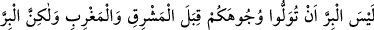
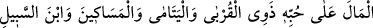
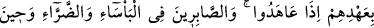
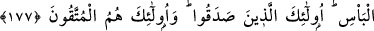
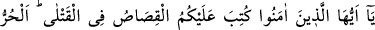
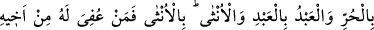
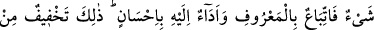
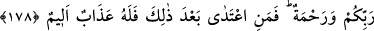
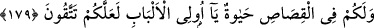
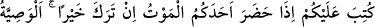
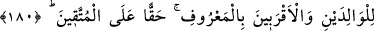
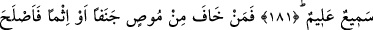
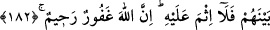
İYİLİK VE GÜZELLİK
177. İyilik, yüzlerinizi doğu ve batı tarafına çevirmeniz değildir. Asıl iyilik, o
kimsenin yaptığıdır ki, Allah’a, âhıret gününe, meleklere, kitaplara, peygamberlere
inanır. (Allah’ın rızâsını gözeterek) yakınlara, yetîmlere, yoksullara, yolda
kalmışlara, dilenenlere ve kölelere sevdiği maldan harcar, namaz kılar, zekât verir.
Antlaşma yaptığı zaman sözlerini yerine getirir. Sıkıntı, hastalık ve savaş
zamanlarında sabreder. İşte doğru olanlar, bu vasıfları taşıyanlardır. Müttakîler
ancak onlardır!
178. Ey îmân edenler! Öldürülenler hakkında size kısas farz kılındı. Hüre hür,
köleye köle, kadına kadın (öldürülür). Ancak her kimin cezâsı, kardeşi
(öldürülenin velisi) tarafından bir miktar bağışlanırsa artık (taraflar) hakkaniyete
uymalı ve (öldüren) ona (gereken diyeti) güzellikle ödemelidir. Bu söylenenler,
rabbinizden bir hafifletme ve rahmettir. Her kim bundan sonra haddi aşarsa